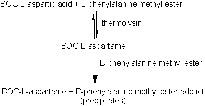
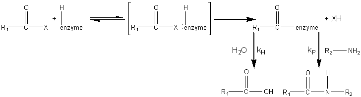
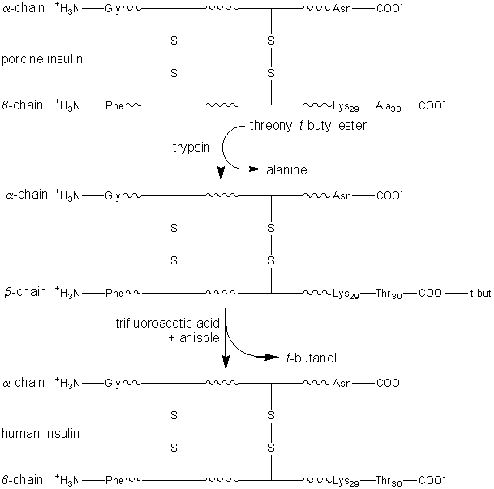

|
|
Practical examples of the use of enzymes 'in reverse'It has long been known that if proteases are supplied with high concentrations of soluble proteins, peptides or amino acids, polymers (plasteins) are produced with apparently random, if rather hydrophobic, structures. This reaction has been used, for example, to produce bland-tasting, colourless plasteins from brightly coloured, unpleasant tasting, algal biomass and for the introduction of extra methionine into low quality soy protein. However in general, the non-specific use of proteases in the synthesis of new structures has not found commercial use. However, proteases have come into use as alternatives to chemical methods for the synthesis of peptides of known and predetermined structure because their specificity allows reactions to proceed stereospecifically and without costly protection of side-chains. A method for the synthesis of the high intensity sweetener aspartame exemplifies the power of proteases (in this case, thermolysin). Aspartame is the dipeptide of L-aspartic acid with the methyl ester of L-phenylalanine (a-L-aspartyl-L- phenylalanyl-O-methyl ester). The chemical synthesis of aspartame requires protection of both the b-carboxyl group and the a-amino group of the L-aspartic acid. Even then, it produces aspartame in low yield and at high cost. If the b-carboxyl group is not protected, a cost saving is achieved but about 30% of the b-isomer is formed and has, subsequently, to be removed. When thermolysin is used to catalyse aspartame production the regiospecificity of the enzyme eliminates the need to protect this b-carboxyl group but the a-amino group must still be protected (usually by means of reaction with benzyl chloroformate to form the benzyloxycarbonyl derivative, i.e., BOC-L-aspartic acid) to prevent the synthesis of poly-L-aspartic acid. More economical racemic amino acids can also be used as only the desired isomer of aspartame will be formed. If stoichiometric quantities of BOC-L-aspartic acid and L-phenylalanine methyl ester are reacted in the presence of thermolysin, an equilibrium reaction mixture is produced giving relatively small yields of BOC-aspartame. However, if two equivalents of the phenylalanine methyl ester are used, an insoluble addition complex forms in high yield at concentrations above 1 M. The loss of product from the liquid phase due to this precipitation greatly increases the overall yield of this process. Later, the BOC-aspartame may be released from this adduct by simply altering the pH. The stereospecificity of the thermolysin determines that only the L-isomer of phenylalanine methyl ester reacts but the addition product is formed equally well from both the D- and L-isomers. This fortuitous state of affairs allows the use of racemic phenylalanine methyl ester, the L-isomer being converted to the aspartame derivative and the D-isomer forming the insoluble complex shifting the equilibrium to product formation. D-phenylalanine ethyl ester released from the addition complex may be isomerised enzymically to reform the racemic mixture. The BOC-aspartame may be deprotected by a simple hydrogenation process to form aspartame.  BOC-L-aspartame : D-phenylalanine methyl ester adduct precipitates" width="411" height="213"> [7.8] Immobilised thermolysin cannot be used in this process as it has been found to co-precipitate with the insoluble adduct. However, this may be circumvented by its use within a liquid/liquid biphasic system. Table 7.2 The specificity of some specific industrial proteases, involving acyl intermediates.
a AA represents any amino acid residue and Z represents amino acid residues, esters or amides. The cleavage sites () are those preferred by the pure enzyme; crude preparations may have much broader specificities. The synthesis of aspartame is a very simple example of how proteases may be used in peptide synthesis. Most proteases show specificity in their cleavage sites (Table 7.2) and may be used to synthesise specific peptide linkages. Factors that favour peptide synthesis are correct choice of pH, the selection of protecting residues for amino and carboxyl groups that favour product precipitation and the use of liquid/liquid biphasic systems, all of which act by controlling the equilibrium of the reaction. An alternative strategy is kinetically controlled synthesis where the rate of peptide product synthesis (kP) is high compared with the rate of peptide hydrolysis (kH). This may be ensured by providing an amino acid or peptide which is a more powerful nucleophile than water in accepting a peptide unit from an enzyme-peptide intermediate. This kinetically controlled reaction may be represented as  RCO-enzyme --(+R2NH2, kP)--> RCONH-R2;" width="728" height="196"> [7.9] where X represents an alcohol, amine or other activating group, i.e., the reactant is an ester, amide (peptide) or activated carboxylic acid. The relative rate of peptide formation compared with hydrolysis depends on the ratio kP/kH, the ratio of the Km values for water and amine, and the relative concentrations of the (unprotonated) amine and water (see equation 1.91). Thus, where necessary, the reaction yield may be improved by lowering the water activity. It has been found that the yields may be increased by reducing the temperature to 4°C, perhaps by a disproportionate effect on the Km values. The amine and enzyme concentrations should be as high as possible for such kinetically controlled reactions and only those enzymes which utilise a covalently-linked enzyme-peptide intermediates can be used (see Table 7.2). Also, the reaction is stopped well before equilibrium is reached as, under such thermodynamic control, the product peptide will be converted back though the enzyme intermediate to the carboxylic acid, a process made almost irreversible by its ionisation in solutions of pH above its pKa, as shown in reaction scheme [7.10]. Peptides may be lengthened either by the addition of single amino acid residues or by the condensation of peptide fragments. The size of the peptide required as the final product may determine the type of synthesis used; condensation of fragments may be performed in kinetically controlled processes whereas stepwise elongation is best achieved using biphasic solid/liquid (i.e., precipitation) or liquid/liquid thermodynamically controlled processes. In general, few proteases are required for such synthetic purposes. As they are quite costly, especially at the high activities necessary for kinetic control, they may be immobilised in order to enable their repeated use. Many examples of enzymic peptide synthesis may be sited. The conversion of porcine insulin to human insulin requires the replacement of the C-terminal alanine (b30) residue by a threonine. This can be achieved by a single transpeptidation step catalysed by trypsin using an carboxyl-protected threonine in an aqueous solution with an organic co-solvent. The protective group can be simply removed later by mild hydrolysis and the product purified by silica gel chromatography (see scheme [7.11]).  alanine +t-butyl human insulin" width="609" height="603"> [7.11] This page was established in 2004 and last updated by Martin
Chaplin |